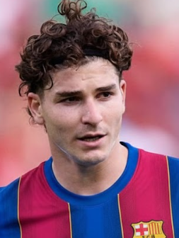
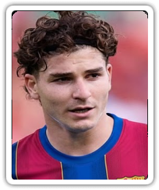
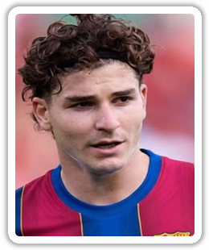

Three independent formalizations of the same 260×310 transparent-border effect, fitted from the 46 samples in Root/. Generated 13 August 2026.
The "transparent border with a gradient" is not a per-image effect and not a blur of the portrait. It is a fixed alpha channel shared by every sample. The RGB data changes from player to player; the alpha channel essentially does not.
A standard deviation near zero at almost every pixel is the whole finding. It means one shared alpha field explains the data, and all three MVPs are therefore competing compressions of the same field, not competing theories about it.
Scanning any line through the shared alpha reveals three concentric zones:
(0,0,0) in every single sample, so it is a drop shadow, not portrait content.x ∈ [19,241], y ∈ [18,292], about 75.7 % of the frame.The same measurement pipeline underpins all three:
tRNS transparency table, 15 are true RGBA. Palette indices must be expanded through the palette before the alpha means anything.N×H×W array and compute per-pixel mean and standard deviation. The near-zero std is what licenses a shared model.0 < alpha < 255 and averaging their RGB. Result ≈ (0.4, 0.4, 0.4), i.e. black.Every model shares the same compositing skeleton. Given a frame F and an input portrait P:
What differs between the MVPs is entirely how F is stored and reconstructed: as a literal matrix, as a geometric formula, or as a product of one-dimensional profiles. That choice drives file size, editability, and how gracefully the model generalises to other canvas sizes.
| Aspect | MVP1 | MVP2 | MVP3 |
|---|---|---|---|
| Representation | Dense per-pixel alpha matrix | Signed distance field + Gaussian halo | Rank-8 separable factorization |
| Language | Python | Python | Node.js |
| Dependencies | NumPy, Pillow | NumPy, Pillow | none at all |
| Stored numbers | 80,600 | 13 | 4,568 |
| Model file size | 80,728 B | 303 B | 98,719 B |
| Median per-sample MAE | 0.3326 | 1.4370 | 0.3470 |
| Resolution independent | no | yes | no (profiles are resamplable) |
| Human-editable | no | yes — 13 named scalars | partly |
| Idempotent | yes | yes | yes, exactly (delta 0) |
Reading the accuracy column. All three were scored identically: render the frame, then compare against the alpha channel of each of the 46 real samples. MVP1 wins on raw error because it stores the answer — it is a lookup table, so its only error is per-image antialiasing. MVP2 is 4× worse yet is arguably the most useful model: 13 scalars that a designer can hand-tune, and it renders at any resolution. MVP3 lands within noise of MVP1 while storing 5.7 % of the parameters a dense matrix needs. Pick by what you need to do, not by MAE.

Test/alavez.png, 253×336

Images sit on a checkerboard so the transparent border and black halo are visible. All three outputs are 260×310 RGBA.
model.json and re-render.Python 3 NumPy + Pillow validated
MVP1 was the first pass, and it is where the central discovery was made: the alpha channel is a constant across the dataset. Stacking all 46 alpha channels and taking the per-pixel standard deviation gives:
With variance that low, the alpha is not a function of the portrait. It is a fixed template that the designer applied identically to every player. The "gradient effect" the user perceives is the soft black halo in that template.
Measured geometry:
x ∈ [19,241], y ∈ [18,292] — 60,998 px, 75.7 % of the frame.(0.4, 0.4, 0.4), i.e. pure black at fractional alpha.N×310×260 NumPy array of alpha and reduced it with mean(axis=0) and std(axis=0). Saved both as greyscale previews — mean_alpha.png and std_alpha.png — because looking at the std image immediately shows the only disagreement is a one-pixel ring on the content edge.template_alpha.npy.The template is the model. No parameters are inferred; the matrix is the parameter set.
Applying the frame is then a single Hadamard product plus a channel swap:
Because Ω ⊙ Ω = Ω and the alpha is overwritten rather than multiplied, the operator is idempotent: framing an already-framed image changes nothing.
--fit variantPixel-aligned mode clips whatever falls outside the rounded corners. --fit avoids that by scaling the portrait to cover the content box B = [19,241]×[18,292] (222×274) and centre-cropping first:
python MVP1\build_template.py # fit and freeze template_alpha.npy
python MVP1\apply_border.py INPUT OUTPUT # pixel-aligned
python MVP1\apply_border.py INPUT OUTPUT --fit # scale-to-cover + centre-cropRoughly 20 lines of real work: load the .npy, derive content_mask = template == 255, resize the input to 260×310 if needed, zero the RGB outside the mask, then np.dstack([rgb, template]) and save as RGBA.
| Check | Result |
|---|---|
Output alpha vs real sample 1000050 | MAE 0.31 · 97.8 % within ±3 |
Re-applied on 100013 | MAE 0.22 · 98.7 % within ±3 |
| Per-sample MAE across all 46 | min 0.1608 · median 0.3326 · max 0.8366 |
test_apply.py assertions | all pass |
The residual is per-image antialiasing on the content edge. For a lookup-table model that is the floor.
mean/std reductions, boolean masking, and dstack. This model is essentially four NumPy calls.convert("RGBA") to normalise palette images, and LANCZOS resampling.io.imread plus richer measurement helpers (regionprops, find_contours) if you want the content region extracted analytically rather than by thresholding.opencv-python) — fastest option at scale and has cv2.merge / cv2.split for channel work. Watch the BGR channel order and note that IMREAD_UNCHANGED is required to keep alpha at all.magick input.png template.png -alpha off -compose CopyOpacity -composite out.png does the same compositing from a shell.Python 3 NumPy + Pillow validated
MVP2 asked a deliberately different question. MVP1 established that the alpha field is fixed; MVP2 asked what shape it is — can the field be regenerated from a geometric description instead of stored?
It can. The field turns out to be describable by 13 scalars, no matrix at all:
| Parameter | Value | Meaning |
|---|---|---|
center_x, center_y | 130.0, 154.5 | centre of the rounded rectangle |
half_width, half_height | 111.5, 138.0 | half-extents of the content box |
corner_radius | 5.25 | corner rounding |
edge_softness | 1.0 | antialiasing width of the content edge |
halo_gap | 9.0 | transparent gap before the glow starts |
halo_sigma | 3.0 | Gaussian falloff of the glow |
halo_peak | 72.09 | maximum glow alpha |
content_alpha, alpha_floor | 255.0, 1.0 | opaque level, ambient floor |
width, height | 260, 310 | canvas size |
The interesting measured result is halo_gap = 9.0 with halo_sigma = 3.0. The glow is detached — it does not touch the picture. That gap is precisely why the effect reads as an ambient gradient rather than a stroke.
This is inverse graphics: propose a parametric generator, then solve for the parameters that best reproduce the observation.
halo_gap.Signed distance to a rounded rectangle, evaluated at pixel centres:
Content coverage — the analytical antialiased edge:
The detached exterior-only Gaussian halo, which fires only where sdf ≥ halo_gap:
And the two layers combine by taking whichever is more opaque:
Note that nothing here depends on 260 or 310 except the sampling loop. Change the canvas and the same formula renders a correctly proportioned frame.
python MVP2\analyze.py # fit the 13 scalars -> model.json
python MVP2\apply_frame.py INPUT OUTPUT # requires exactly 260x310
python MVP2\apply_frame.py INPUT OUTPUT --resize # resample off-size input firstThe renderer is shared between analysis and application (procedural_model.py), so the model that was fitted is provably the model that ships. model.json is 303 bytes and is validated on load: every one of the 13 keys must be present and must be a scalar, never a list or dict. That guard is what enforces "no template snuck back in".
Half of all pixels are reproduced exactly (p50 = 0). The error is concentrated in the p99 tail, which is the one-pixel content edge and the outer tail of the glow — exactly where a smooth analytical function cannot match hand-authored pixels. Also asserted: source-alpha accounting, RGB retention inside the content region, black halo RGB, and CWD-independent path handling.
Honest comparison. MVP2 is about 4× less accurate than MVP1 on paper. That is the price of describing the frame instead of copying it, and for most uses it is worth paying: 303 bytes, any resolution, and every parameter has a name a designer can reason about.
halo_sigma for a softer glow; raise corner_radius for rounder corners.mgrid to build the coordinate lattice, then vectorised hypot, maximum, clip, and exp to evaluate the SDF over all 80,600 pixels without a Python loop. This is the whole renderer.statistics.median semantics rather than a fitting framework, because each parameter is recoverable in closed form from the measured field.optimize.least_squares or curve_fit to fit all 13 parameters jointly by minimising residual against the real alpha, instead of recovering them one at a time. This is the natural upgrade path and would likely close some of the gap to MVP1.skia-python) — production-grade vector renderers with native rounded rectangles and real Gaussian blur. Let the library rasterise the shape rather than hand-rolling the SDF.ImageDraw.rounded_rectangle plus ImageFilter.GaussianBlur gets you a visually similar frame in about ten lines, if you do not need an explicit parameter set.border-radius plus box-shadow expresses this exact effect natively in a browser, if the target is web rather than a PNG.Node.js 22 (ESM) zero dependencies 8/8 checks passed
MVP3 had two constraints: no Python, and no reuse of either earlier idea. So it asks a third question — not "what is the field" and not "what shape is it", but what is its algebraic rank?
The answer is startling. The singular values of the mean alpha field collapse after the first term:
Singular value per rank-1 term (bar heights are log-ish scaled for legibility; the first term is ~55× the second).
The leading term carries roughly 98 % of the spectral energy. In plain terms: the frame is almost exactly a product of one vertical profile and one horizontal profile, alpha(y,x) ≈ f(y)·g(x). That is a real structural fact about the artwork that neither earlier model exposed — and it makes sense in hindsight, because a rectangle with a symmetric shadow is inherently separable. Terms 2–8 exist only to correct the rounded corners and glow falloff, where rows and columns are not quite independent.
Working without Python meant building the stack from the ground up.
zlib — the one thing you genuinely cannot hand-roll cheaply for PNG.tRNS (29 of them also carry an iTXt chunk), 15 are 8-bit RGBA, none interlaced. That told me exactly which decoder paths were required and which could fail loudly instead of guessing.png.mjs) — signature check, chunk walk for IHDR/PLTE/tRNS/IDAT, inflateSync, then reversal of all five scanline filters including Paeth. Palette indices are expanded through PLTE/tRNS so everything downstream sees uniform straight RGBA.Treat the mean alpha field as a matrix and approximate it by a sum of outer products of 1-D profiles:
This is a truncated SVD written in separable form. Parameter count:
Each rank-1 term is found by the fixed point that an SVD converges to. Starting from a uniform v, 120 sweeps of:
Then the term is deflated out so the next one fits the residual:
No BLAS, no LAPACK, no matrix library — just two nested loops and a normalisation.
| K | weight s_K | MAE vs mean field |
|---|---|---|
| 1 | 63,393.9 | 0.6237 |
| 2 | 1,147.4 | 0.3549 |
| 3 | 674.4 | 0.2789 |
| 4 | 495.0 | 0.1607 |
| 5 | 344.1 | 0.1224 |
| 6 | 192.6 | 0.0982 |
| 7 | 131.5 | 0.0803 |
| 8 | 120.4 | 0.0667 |
I tested rank 12 as well. It fits the mean field better (MAE 0.0529 vs 0.0667) but agreement with real samples does not improve — median per-sample MAE 0.3481 vs 0.3470. The extra terms are absorbing per-image antialiasing noise, not signal. Rank 8 ships.
The first version multiplied source alpha by frame alpha directly. The idempotency check caught it immediately: re-applying the frame darkened the glow by up to 64 levels, because the glow gradient was being multiplied twice. The fix normalises away any frame the input already carries before re-applying:
Max channel delta on re-apply is now 0 — exactly idempotent, not approximately. A fully opaque input yields A_out = Â; a fully transparent one stays transparent; a soft cut-out keeps its own gradient.
node MVP3\analyze.mjs --rank 8 # fit -> model.json
node MVP3\apply-frame.mjs INPUT OUTPUT # bilinear resize if off-size
node MVP3\apply-frame.mjs INPUT OUTPUT --fit # scale-to-cover + centre-crop
node MVP3\apply-frame.mjs INPUT OUTPUT --no-resize # reject off-size instead
node MVP3\verify.mjs # 8/8 assertions| File | Role |
|---|---|
png.mjs | PNG decode/encode on node:zlib alone |
separable.mjs | rank-1 extraction, deflation, frame rendering |
analyze.mjs | Step 1 — fit the model from Root/ |
apply-frame.mjs | Step 2 — apply the frame, incl. bilinear resample and cover-crop |
verify.mjs | assertion suite, writes verification.json |
| Check | Result |
|---|---|
| Model holds separable terms only, no 2-D matrix | 4,568 vs 80,600 numbers (5.7 %) |
| RGBA PNG round-trip | byte-exact at 37×19 |
| Greyscale PNG round-trip | byte-exact at 8×8 |
| Frame vs real samples | 1000050 0.347 / 97.1 % ±3 · 100013 0.285 / 98.6 % ±3 |
| Apply output on the 253×336 test portrait | clean 260×310 RGBA |
| Glow colour and centre opacity | corner (0,0,0) · centre alpha 255 |
| Idempotency | max channel delta 0 |
| Source transparency respected | transparent in → transparent out |
Against the mean field: MAE 0.0667, p50 0.0017, p90 0.0699, p99 1.8707, max 13.80.
Float32Array dump would be ~18 KB.node:zlib — inflateSync / deflateSync. The DEFLATE stream inside IDAT is the only part of PNG worth delegating.node:assert/strict — the validation suite, no test framework needed.node:fs, node:path. That is the complete dependency list.For image I/O in Node — you almost certainly should not hand-write a PNG codec in production:
raw() gives you the pixel buffer and ensureAlpha() normalises channels. The standard choice.png.mjs does, but handles interlacing and 16-bit too.getImageData / putImageData work exactly as in a browser.sharp is a problem.OffscreenCanvas + ImageData needs no library at all.For the linear algebra — power iteration was written by hand only because I wanted zero dependencies:
SingularValueDecomposition class, so the whole of separable.mjs becomes a few lines.numpy.linalg.svd or sklearn.decomposition.TruncatedSVD — the Python equivalents, one call each, if the no-Python constraint is lifted.clamp here has to absorb.Other runtimes available on this machine — .NET is installed, so System.Drawing.Common or ImageSharp with MathNet.Numerics for the SVD would have been an equally valid non-Python route.